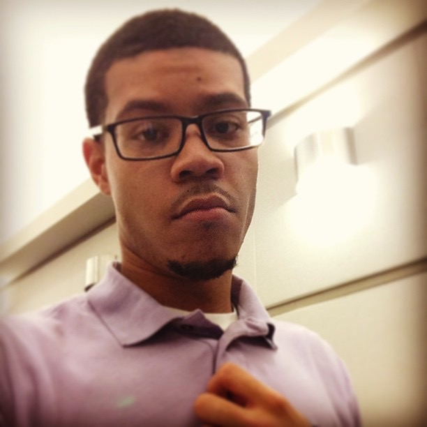

My name is Karl Henderson. I am the founder and ceo of my own startup consulting company. This year, I am a senior computer scientist at the University of Michigan, Ann Arbor, with a minor focus in International Spanish. I love love love to create, consult, design, develop, and innovate!
Hey there, I'm Karl. I am studying computer science engineering at the University of Michigan, Ann Arbor. I'm also pursuing an International Spanish minor . I've acquired a great deal of product development and software development experience during my two summers spent at Microsoft and past two years of Independent Study Research at school. I am an aspiring entrepreneur and product developer. I love building applications and creating websites. I began my journey into the innovative technology field at the University of Michigan. I've had the opportunity to develop radio software used by the federal goverment and military while interning at Harris RF Communications in Rochester, New York. I have also gathered a plethora of experience interning at Microsoft in Redmond, Washington for two summers. During my first summer, I underwent Microsofts prestigous rotational Explorer Program, and I helped design and develop a Windows Phone 8 Mobile Application called HaveWeMet, meant to serve for serendipituous networking within enterprises. This past summer, I implemented a smart monitor to detect anomalous behavior within SharePoint Software Systems on a global scale . Check out My Resume! Please feel free to take a look at all of my work, and don't hesitate to contact me if I can be of any service to you. Thanks for dropping by!